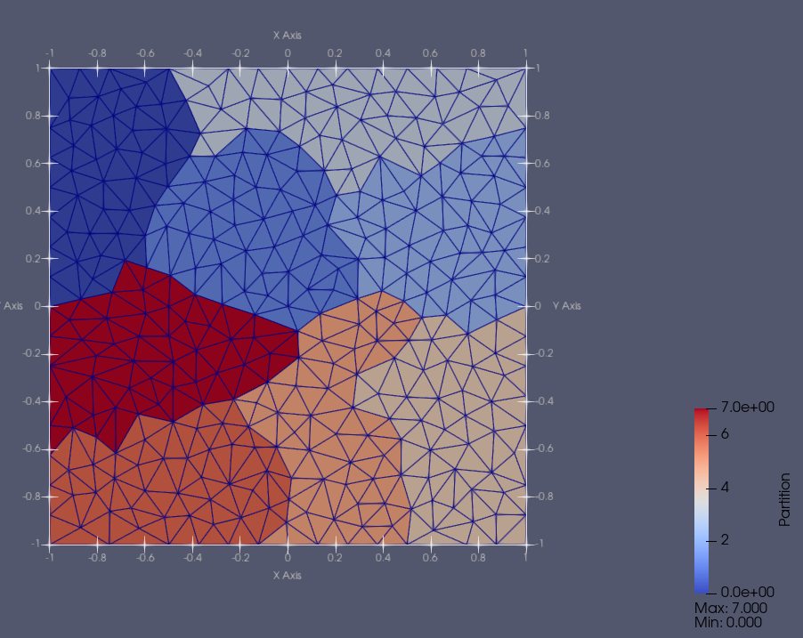
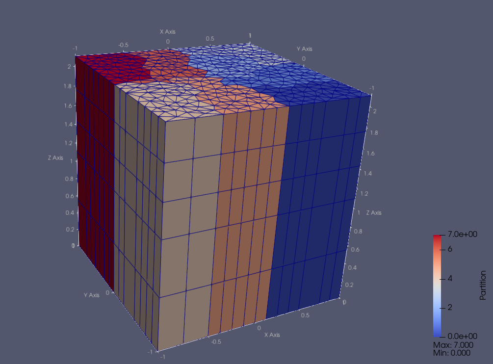
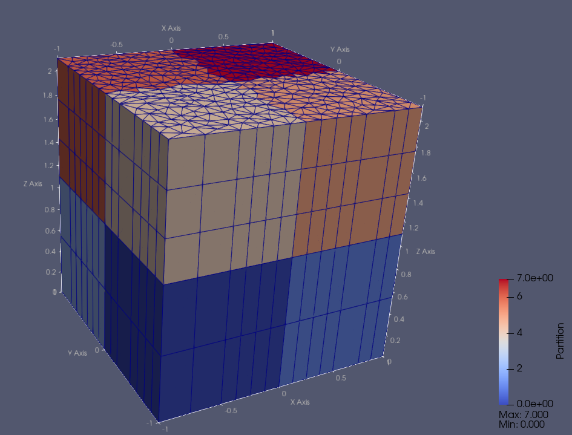

Mesh Generators
We split a MeshGenerator’s execution into a
phase that generates an unpartitioned mesh and a phase that then converts
this mesh into partitioned MeshContinuum (with both steps
customizable). The phase that creates the MeshContinuum object can be hooked
up to a partitioner that can also be designed to be pluggable.
Example A
nodes = {-1.0,-0.75,-0.5,-0.25,0.0,0.25,0.5,0.75,1.0}
meshgen1 = mesh.OrthogonalMeshGenerator.Create({ node_sets = {nodes,nodes} })
mesh.MeshGenerator.Execute(meshgen1)
MeshHandlerExportMeshToVTK("ZMeshTest")
In this example we created a set of nodes (monotonically increasing in value)
for use with the
OrthogonalMeshGenerator.
We supplied the same set twice meaning the generator will build a 2D mesh.
We did not specify a partitioner and therefore the generator will use the
PETScGraphPartitioner with type="parmetis" by default.
Using 8 processes, we can see the mesh and it’s partitioning below.

Example B
meshgen1 = mesh.FromFileMeshGenerator.Create({ filename="TriangleMesh2x2.obj" })
mesh.MeshGenerator.Execute(meshgen1)
MeshHandlerExportMeshToVTK("ZMeshTest")
In this example we created a mesh by reading it from a file, using the
FromFileMeshGenerator.
The types of file-types we can support is ever growing.
At the time of writing this we support the following formats:
.objWavefront.mshgmesh,.eExodusII,.vtuVTK Unstructured grid,.pvtuPieced VTK Unstructured grid,.caseEnsight Gold
Using 8 processes, we can see the mesh and it’s partitioning below.

Example C
meshgen1 = mesh.ExtruderMeshGenerator.Create
({
inputs =
{
mesh.FromFileMeshGenerator.Create({ filename=TriangleMesh2x2.obj" }),
},
layers = {{z=1.1, n=2}, -- First layer - 2 sub-layers
{z=2.1, n=3}}, -- Second layer - 3 sub-layers
})
mesh.MeshGenerator.Execute(meshgen1)
MeshHandlerExportMeshToVTK("ZMeshTest")
In this example we use an ExtruderMeshGenerator with another
mesh generator as an input to create an extruded mesh.
Using 8 processes, we can see the mesh and it’s partitioning below.

Using different Partitioners
ChiTech now has a set of Graph Partitioners (i.e. based off GraphPartitioner)
that support different forms of partitioning, for example we have:
LinearGraphPartitioner, a very basic partitioner used for during the preparation of simulation meshes.PETScGraphPartitioner, a flexible partitioner that can use all the partitioner options available in PETSc (defaults to using"parmetis").KBAGraphPartitioner, the classical Neutron Transport KBA parallel partitioning with an overlaid orthogonal layout.
An example of changing the partitioning to PETSc’s "average" option is shown
below:
meshgen1 = mesh.ExtruderMeshGenerator.Create
({
inputs =
{
mesh.FromFileMeshGenerator.Create
({
filename="resources/TestMeshes/TriangleMesh2x2.obj"
}),
},
layers = {{z=1.1, n=2}, {z=2.1, n=3}},
partitioner = PETScGraphPartitioner.Create({type="average"})
})
mesh.MeshGenerator.Execute(meshgen1)
MeshHandlerExportMeshToVTK("ZMeshTest")

Another example using the KBAGraphPartitioner is shown below
meshgen1 = mesh.ExtruderMeshGenerator.Create
({
inputs =
{
mesh.FromFileMeshGenerator.Create
({
filename="resources/TestMeshes/TriangleMesh2x2.obj"
}),
},
layers = {{z=1.1, n=2}, {z=2.1, n=3}},
partitioner = KBAGraphPartitioner.Create
({
nx = 2, ny=2, nz=2,
xcuts = {0.0}, ycuts = {0.0}, zcuts = {1.1}
})
})
mesh.MeshGenerator.Execute(meshgen1)
MeshHandlerExportMeshToVTK("ZMeshTest")

The special SplitFileMeshGenerator
For very large meshes the mesh generation process could both take very long and
require a lot of memory. The current mode of operation of the mesh generators is
that each process builds the mesh as an unpartitioned mesh then the mesh gets
converted to a partitioned mesh. Therefore, when a lot of processes are used,
there could be a large memory spike, large enough to be greater than what even
an HPC node has available. To partly address this problem we have the
SplitFileMeshGenerator. This generator will process multiple mesh
inputs like any other mesh generator but instead of building the mesh on each
processor only the home location builds the mesh. Thereafter the mesh is
partitioned and each processors’ local-cells, ghost-cells, and relevant vertices
are written to separate binary files. The default folder, into which these files
are written, is named “split_mesh” and the default file names for the meshes are
“split_mesh_x.cmesh”, where the x represents the processors rank. Both the
folder name and file name prefixes (i.e. the “split_mesh” part) can be altered
via input parameters.
It is also possible to generate split meshes in serial by supplying the
num_parts parameter. Also, if a simulation uses the same mesh over and over
then the parameter read_only can be used to suppress the mesh being
created every single time.
SplitFile Example A
meshgen1 = mesh.SplitFileMeshGenerator.Create
({
inputs =
{
mesh.OrthogonalMeshGenerator.Create({ node_sets = {xmesh,ymesh,zmesh} })
},
})
mesh.MeshGenerator.Execute(meshgen1)
The examples below will create, in the current working directory, the folder
split_mesh and within it split_mesh_0.cmesh, split_mesh_1.cmesh, etc.
SplitFile Example B
meshgen1 = mesh.SplitFileMeshGenerator.Create
({
inputs = {
mesh.OrthogonalMeshGenerator.Create({ node_sets = {xmesh,ymesh} }),
mesh.ExtruderMeshGenerator.Create
({
layers = {{z=Lz, n=Nz}}
})
}
})
mesh.MeshGenerator.Execute(meshgen1)
This example is the same as the one above it, however, it uses the extruder mesh generator in a chain.
Note: Partitioning and the other parameters of
SplitFileMeshGenerator are identical to that of
the base MeshGenerator.